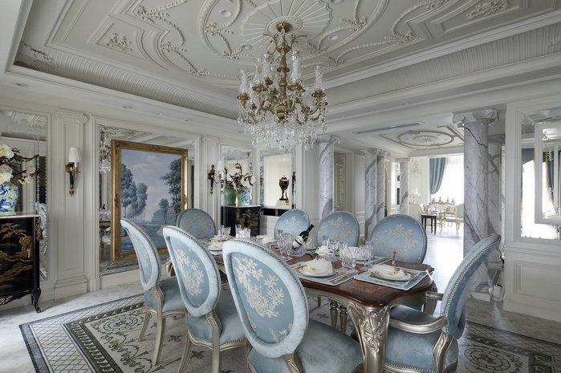
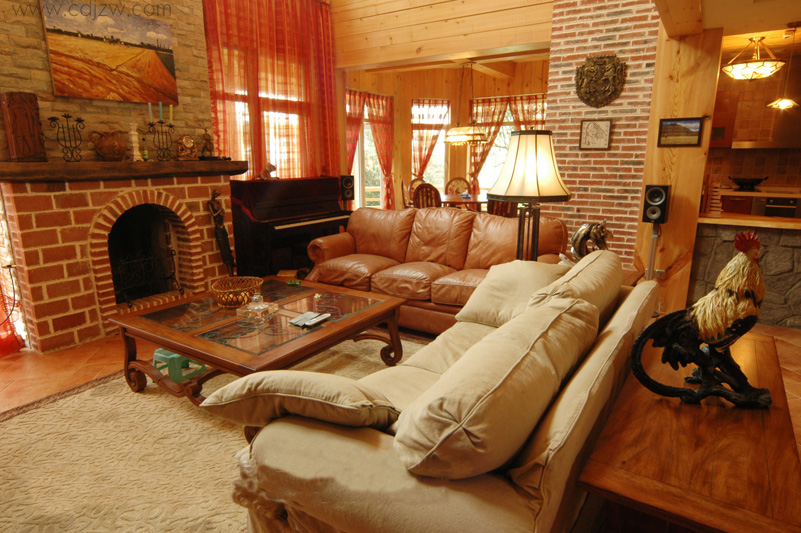
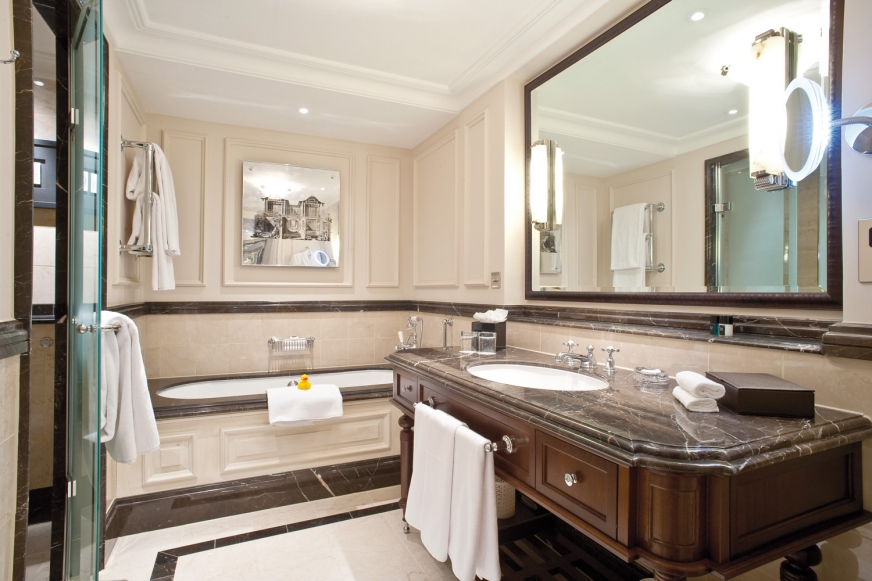
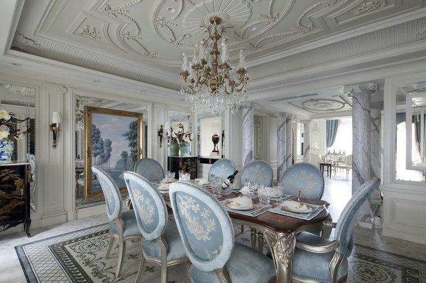
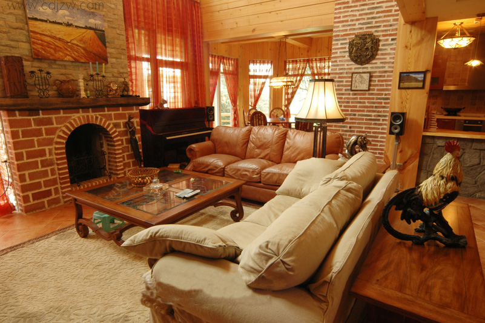
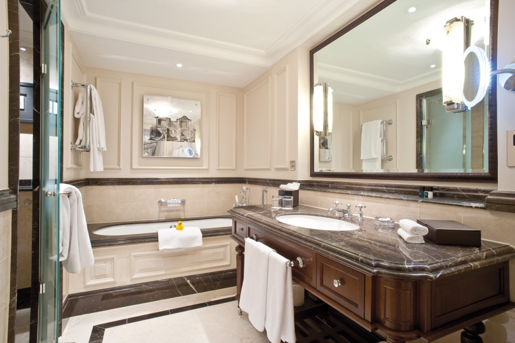

欧美风带着西方宗教特有色彩同时还有自由主义的精神;欧美风是一种激情艺术体现者。欧美风是注重整个装修的立体感和空间感，这样的装修虽然富丽堂皇、气势宏大但是同样的不会让整个装修显得沉重，更加的体现出了空间感。
欧美风在建筑上重视建筑与雕刻、绘画的综合，此外，也吸收了文学、戏剧、音乐等领域里的一些因素和想象;这样的风格更适合于大面积的装修。
 欧美风带着西方宗教特有色彩同时还有自由主义的精神;欧美风是一种激情艺术体现者。欧美风是注重整个装修的立体感和空间感，这样的装修虽然富丽堂皇、气势宏大但是同样的不会让整个装修显得沉重，更加的体现出了空间感。
欧美风在建筑上重视建筑与雕刻、绘画的综合，此外，也吸收了文学、戏剧、音乐等领域里的一些因素和想象;这样的风格更适合于大面积的装修。
 其它住房类型

古典风格
现代风格

地中海风格

温馨小户型

日式风格